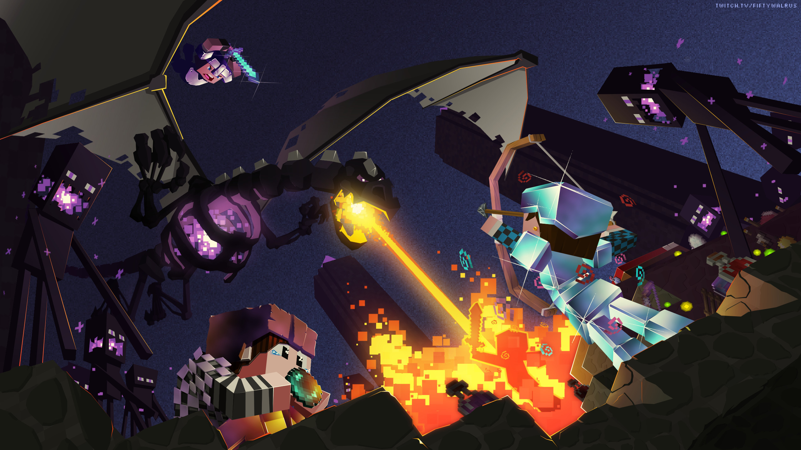
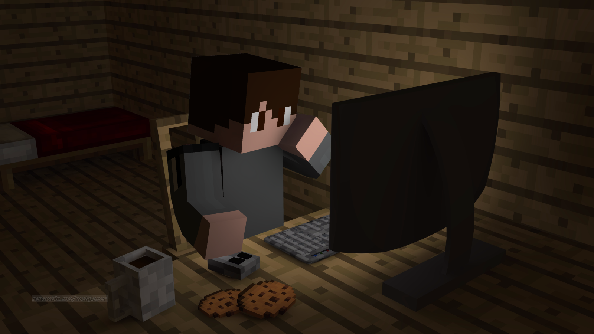

Présentation :
Minecraft est un jeu vidéo de type "bac à sable" (c'est-à-dire de construction complétement libre). D'abord développé par le suédois Markus Persson, alias Notch, puis par le studio de développement Mojang, il s'agit d'un univers composé de voxels (pixels en 3D) et généré aléatoirement.
Minecraft est à l'origine développé pour être un jeu sur navigateur Web, puis sur Windows, Mac et Linux (à l'aide de Java). Un portage sur téléphone mobile existe également, Minecraft Pocket Édition (abrégé Minecraft PE), sorti sur les smartphones Android, sur les terminaux iOS, les appareils Windows Phone et Windows 10. Une version pour Xbox 360 est sortie le 09 mai 2012, développée par 4 J Studios. Une version PlayStation 3 développée par Mojang est disponible depuis le 18 décembre 20138. La version PS4 est sortie le 4 septembre 2014 sur le PlayStation Store, la version Xbox One est publiée le lendemain tandis que la version Wii U est disponible en téléchargement sur le Nintendo eShop depuis le 17 décembre 2015 et en version physique depuis le 30 juin 2016. La version Nintendo Switch est sortie le 12 mai 2017 et la version New Nintendo 3DS le 14 septembre 2017.

Il existe 3 modes de jeu : créatif / survie / aventure. Dans le premier vous avez accès à toutes les ressources et pouvez construire tout ce que vous voulez, dans le second il faudra vous nourrir, aller récolter les ressources vous-même et affronter les monstres, le dernier mode sert surtout dans les maps crées par les autres joueurs.

La plupart du temps vous jouerez en mode survie, votre but sera alors de récolter le maximum de ressources pour aller affronter le boss final : l'Enderdragon. Celui-ci se trouve dans un autre monde : l'End. Mais avnt d'y parvenir il vous faudra surement avoir une bonne armure ainsi que de bonnes armes si possible enchantées et avec des potions. Pour ça il vous faudra sûrement aller dans le Nether, monde souterrain accessible uniquement avec un portail fait d'obsidienne.

Vous pouvez également jouer en multijoueur, sur des serveurs créer par d'autres joueurs. Les possibilités sont beaucoup plus importantes qu'en solo notamment grâce aux mods et aux plugins rajoutant de nombreuses actions/objets. Pour aller sur un serveur il vous faudra son IP et disposer de la bonne version (ex : 1.14.4)